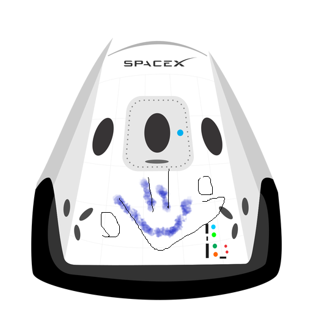

HyperBlog Tu blog de Confianza
Este es el titulo atractivo e intere sante del post
Y este es el páarrafo(Con tilde) de inicio donde vamos a explicar las cosas increibleees que se pueden hacer con ramas

Los transistores son la mayor herramienta en la revolucion y el crecimiento tecnologico de la humanidad
Suscribete y dale Like